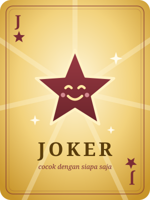
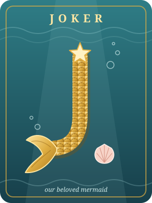
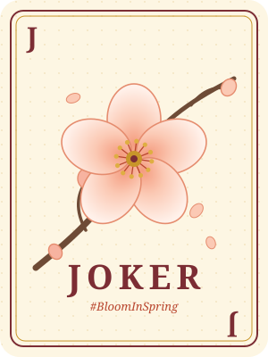
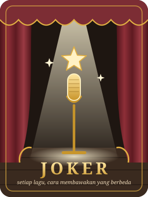

Desain Kartu Joker
Empat konsep kartu Joker untuk Mode Tantangan Pasangkan Momen. Semuanya vektor buatan tangan (SVG) dengan palet Armeniaca, tanpa gambar Eli buatan AI.

1 · Bintang EmasKlasik dan paling mudah dikenali: bintang tersenyum di atas emas bersinar. Paling dekat dengan Joker yang sekarang.

2 · Putri DuyungEkor bersisik emas membentuk huruf J, untuk "our beloved mermaid" 🧜🏻♀️ di caption Armeniaca.

3 · Aprikot Musim SemiBunga aprikot dari bio @armeniaca15, "blooming like apricot in spring" · #BloomInSpring.

4 · PanggungTirai teater dan lampu sorot di mikrofon: setiap lagu, cara membawakan yang berbeda (prinsip "tetap manusia").
Di papan, ukuran HP (~56 px)